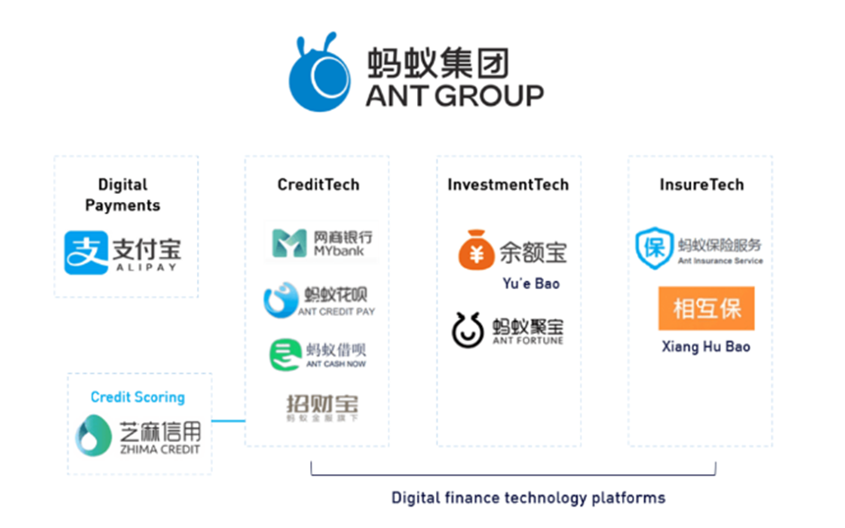

Examine factors that contributed to the rise of Fintech companies
Assignment Topic
2021 was an exceptional year for fintech. In the year, we witnessed once-nascent businesses scaled up to become the potential next giants in the economy. For example, Coinbase and Robinhood were listed respectively in May and July. Coinbase was listed with a market capitalisation of $86 billion and Robinhood was listed at $32 billion, surpassing the market capitalisation of some decades-old reputable companies such as Nasdaq ($26B). These companies have taken about a decade to dethrone and challenge the market share of big financial services companies.
In this assignment, we seek to explore and understand the chain of events culminating to these major developments and how these developments will further accelerate the adoption of technology to deliver affordable financial services to the masses.
Select and examine four (4) factors that contribute to the meteoric rise of fintech companies.
Introduction
The Financial Stability Board [1] describes Fintech as “as technologically enabled innovation in financial services that could result in new business models, applications, processes or products with an associated material effect on financial markets and institutions and the provision of financial services”. From the user perspective, this can also be described as the innovation in financial services facilitated by technology and impacting user experience.
Many factors can be attributed to the rise of Fintech, from which I will seek to examine four of these factors below:
1) Changing Consumer demographics: The rise of the underbanked and underserved
2) Changes in customer preferences: Issues of trust, preferences, and expectations
3) Improvements in Technology: Mobile phone penetration, digital connectivity, and new technologies applicable to finance
4) The Great Financial crisis and subsequent policies and regulatory environment
The rise of the under-banked and under-served
In a study done by the World Bank in 2017 [2], it was estimated that 1.7 billion adults were still unbanked and lacked access to basic banking services. In developing countries, households still primarily transacted in cash for daily transactions. Further, for those with bank accounts, additional financial services like consumer credit, insurance and wealth management were not available in these geographies. Closer to home, it is also estimated that 66% of Indonesia’s 275 million population remain unbanked [3]. Many of these Indonesians live in rural areas and do not have access to basic services such as payments, transactions, credit, and insurance. It is likely that they remain largely unserved because of their remote locations and distance from the nearest bank branch. Also, many of them would likely not meet the credit requirements needed to access credit or other financial services from banks.
It is more than likely that this huge amount of unmet demand has directly been a driver for the tick up in the rate of fintech adoption in these geographies. Unencumbered by strict onboarding requirements, stringent regulatory and credit requirements, physical presence, and location of customers, fintech companies have made use of their existing ecosystems and technologies to expand and extend their reach by means of mobile devices and online platforms.
For example, M-Pesa, the mobile phone-based money transfer service by Kenya’s Safaricom initially started in 2007 in Kenya and is now operating in multiple countries in Africa. M-Pesa users credit funds into their mobile phone account and use their mobile phones to transfer funds to other M-Pesa users. This service has been successfully adopted with more than 30 million users[4], contributing to transactions worth more than 40% of Kenya’s GDP. In 2016, It is also estimated that the provision of these services has lifted 2% of Kenyans out of poverty and helped an estimated 185,000 women to move from farming to business occupations [5].
In Indonesia, Grab [3] extends its financial services by means of a grassroots approach to empower small businesses across the country to transact for goods and services and to provide their local communities with financial services like fund transfers, remittances, bill payments, gold saving accounts and insurance. Using the same Grab application and ecosystem, these local agents help to propagate Grab’s suite of services to local communities which are otherwise underserved by traditional banks. This not only enables local small businesses to stay relevant to their community needs but also enables more people in remote areas to participant in the financial system.
Issues of Trust, Preferences and Expectations
After the Global Financial Crisis in 2008, customers grew sceptical of traditional financial institutions and instruments. With the multiple system and market failures resulting in many established firms going under, and many more suffering impactful losses; customers began to question whether the banking sector was indeed resilient and trustworthy. While banks were busy ‘fighting fire’ and adjusting business models and strategies, compliance to new regulations and re-aligning markets, fintech firms stepped up to fill the void left by them.
At the same time a new generation of consumers (millennials) were participating in the economy for the first time and brought with them changing shifts in preference and expectations.
Based on a study by SDL plc in 2014 [6], the following observations regarding millennials were noted:
1) They are more likely to engage with brands that they already know and trust
2) They are digitally active and use multiple devices daily
3) They connect with companies thru social media to get discounts and other benefits
4) They discover content through social media and social networks
5) They expect a fast response and instant gratification
6) They prefer tailored and customized services that they can choose
Specifically, these group of users are ‘digital natives’ who prefer a digital approach of accessing financial services rather than traditional means.
It is not surprising then that tech firms who were already engaging this group of users in their e-commerce ecosystem would benefit from providing additional financial services to them. For example, users of Apple, Google, Samsung, Ant Group, We Chat, and Amazon would have no difficulty making the transition to use their respective payments applications. Similarly, new fintech firms do not need to invest in physical spaces, IT infrastructure to market to new users over the internet and social media.
With lower barriers of entry, Fintech firms and start-ups specifically concentrate on a few selected financial services, they tend to focus on building capabilities on services where traditional banks are unable to provide reasonable customer experience. This use of technology and data enable Fintech firms to change how customers are served and extend cost savings to the consumer. The speed, reach, availability, and customized nature of services delivered further improve the customer experience. These financial services include cryptocurrencies (CoinBase), online trading (RobinHood), payments (Paypal), P2P lending (Lending club), robo advisory ( WealthFront) among many others.
Improvements in Technology
Smartphone and internet penetration have revolutionised connectivity, rapidly increasing the ability to transfer information and interact remotely, between businesses and consumers. This has improved access to services and enabled the delivery of readily available, lower-cost and tailored financial services to users irrespective of location and time-zone.
In a 2019 report by the World Advertising Research Centre [7], an estimated 51% of global smartphone users use only their smartphones to access the internet. This is estimated to grow to 72.6% of users by 2025, with most of the growth coming from China, India, and Indonesia. In many countries it is also likely that users will only ever use a smartphone instead of a computer. The small form factor makes smartphones a convenient device to interact with banks and other fintechs, facilitating seamless online transactions, payments, investments, and other financial services. For example, in China, the two dominant payment services app is Ant Financial’s Alipay and TenCent’s WeChat Pay.
Alipay was initially launched in 2004[8] and started off as a online e-wallet to facilitate payments and provide escrow services for users of TaoBao, its e-commerce website. As a pioneer of e-commerce, TaoBao benefited from having a large customer base and payments ecosystem. As users of smartphones in China began to proliferate from the mid 2000s, Ant launched its smartphone application in 2009 and subsequently launched Quickpay in 2010 to allow users to link their credit cards to their Alipay accounts. In 2011, QR code payments were introduced which allowed users to transact with each other by means of scanning their QR codes. As user requirements grew, so did the services offered by the Alipay app. Now, users can use their smartphones to pay via QR codes, In-app funds transfer, web-payment and point of sales terminals in-store via NFC.
As users of its ecosystem grew, Ant Group was also able to use new technologies like AI, ML and Big Data analysis to leverage on its wealth of consumer data and insights to develop accurate customer profiles through the analysis of customer payment history and transaction activity
With customers already entrenched via its digital payments service Alipay, Ant has been able to further offer complementary financial services like investments, lending and credit, credit scores, and even insurance.
Ant’s complete suite of services:

It is useful to note that as China made the transition to a smartphone base economy, both consumers and businesses were seeking for a more convenient, cashless, fast, and secure payment mechanism. It is no wonder then that Ant was able to capture this huge shift in requirements and exponentially grow as the number of smartphone users grew.
Policies and Regulatory environment
Post-Global Financial crisis of 2008, banks and traditional financial institutions were grappling with the fall out from the crisis and the subsequent new regulation regimes implemented to reassess risk policies, exposure to markets and capital adequacy requirements. It is noted that Fintech firms and other Tech fins were not subjected to the same regulatory burdens and levels of inquiry from regulators. This enabled Fintech firms to come into the market or even expand their suite of services to meet burgeoning demand from a customer base seeking a more digital and tailored suite of financial services.
At the same time, Governments and regulators recognized that many consumers were still underserved and wanted to provide a conducive environment for Fintechs to come in to improve financial inclusion and financial participation. This can be seen by the success of M-Pesa in Kenya, WeChat pay and Alipay in China and TCASH in Indonesia in mobile payments and consumer credit.
For example, as mobile payments in China were largely unregulated due to its relatively small size at inception, the PBOC did not impose transaction size limits nor require payment services firms to report customer transaction details to their trust banks. Similarly, in Kenya, when Safaricom approached the Central Bank of Kenya to launch M-Pesa, while there was no precedence for a tele communications company to offer financial services, the central bank developed Trust account requirements for Safaricom to comply with before enabling the launch of their services [10].
In India, the government initiated the Start-up India [11] program, which provides for simplified regulatory processes, tax exemptions, patent reforms, mentorship opportunities and funding for fintech start-ups.
Other jurisdictions like the UK, Hong Kong and Singapore see Fintech as the new paradigm to maintain their competitiveness as global financial hubs.
For example, the MAS has initiatives in place to foster FinTech collaboration such as fintech offices, accelerator programs and sandbox environments where FinTech and financial institutions can experiment with innovative products in a live environment [12]. The sandbox environment empowers fintech firms and start-ups to test their products in a live environment with limited impact to the financial system, enabling a viable assessment of their products before launch.
In conclusion, it is not surprising how the four factors above have provided the perfect stage for new entrants to disrupt traditional banking and finance. It is rare that a such a confluence of technology, financial crisis and demographics emerge at the same time to spur innovation and the entry of new players. Moving forward, changes in technology and consumer preferences will surely further spur new innovations and will likely encourage incumbent banks to step up their game to stay competitive and relevant.
References
[1] FinTech. (n.d.). Financial Stability Board. Retrieved September 26, 2022, from https://www.fsb.org/work-of-the-fsb/financial-innovation-and-structural-change/fintech/#:%7E:text=The%20FSB%20defines%20FinTech%20as,the%20provision%20of%20financial%20services
[2] Overview. (n.d.). World Bank. Retrieved September 26, 2022, from https://www.worldbank.org/en/topic/financialinclusion/overview
[3] Post, T. J. (2021, April 15). Grassroot strategy to realize financial inclusion in Indonesia. The Jakarta Post. Retrieved September 26, 2022, from https://www.thejakartapost.com/life/2021/04/15/grassroot-strategy-to-realize-financial-inclusion-in-indonesia.html
[4] Guguyu, O. (2022, March 10). Safaricom’s M-Pesa crosses 30 million active users in Kenya. The East African. Retrieved September 26, 2022, from https://www.theeastafrican.co.ke/tea/business/safaricom-m-pesa-crosses-30-million-active-users-in-kenya-3743258#:%7E:text=Mobile%20money%20transfer%20platform%20M,digital%20transactions%20in%20the%20country
[5] Study: Mobile-money services lift Kenyans out of poverty. (2016, December 8). MIT News | Massachusetts Institute of Technology. Retrieved September 26, 2022, from https://news.mit.edu/2016/mobile-money-kenyans-out-poverty-1208
[6] Content Finds the Customer: SDL Global Study Finds Social Media Drives Content Discovery with Millennials. (2014, June 4). Business Wire. Retrieved September 26, 2022, from https://www.businesswire.com/news/home/20140604005209/en/Content-Finds-the-Customer-SDL-Global-Study-Finds-Social-Media-Drives-Content-Discovery-with-Millennials
[7] Handley, L. (2019, January 24). Nearly three quarters of the world will use just their smartphones to access the internet by 2025. CNBC. Retrieved September 26, 2022, from https://www.cnbc.com/2019/01/24/smartphones-72percent-of-people-will-use-only-mobile-for-internet-by-2025.html
[8] Ant Group Official Website. (n.d.). Retrieved September 27, 2022, from https://www.antgroup.com/en/about/history
[9] Ahern, B. (2020, October 15). Ant Group 101. SeekingAlpha. Retrieved September 27, 2022, from https://seekingalpha.com/article/4379258-ant-group-101
[10] World Bank and Cambridge Center for Alternative Finance. (2019) “Regulating Alternative Finance: Results from a Global Regulator Survey”. 2019 https://openknowledge.worldbank.org/handle/10986/32592
[11] Government Initiatives. (n.d.). Retrieved September 27, 2022, from https://www.startupindia.gov.in/content/sih/en/international/go-to-market-guide/government-initiatives.html
[12] Overview of Regulatory Sandbox. (n.d.). Retrieved September 27, 2022, from https://www.mas.gov.sg/development/fintech/regulatory-sandbox
Feyen, E. (2021, July 13). Fintech and the digital transformation of financial services: implications for market structure and public policy. Retrieved September 27, 2022, from https://www.bis.org/publ/bppdf/bispap117.htm
Frost, J. (2020, February 4). The economic forces driving fintech adoption across countries. Retrieved September 27, 2022, from https://www.bis.org/publ/work838.htm